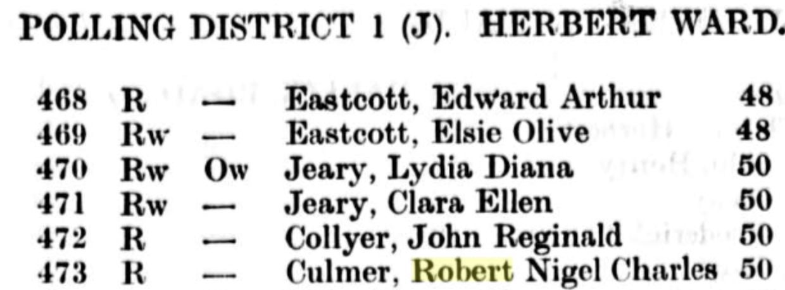

Robert Nigel Charles Culmer 1910 - 1970
[ Home ] | [ Calendar ] | [ Surnames Index ] | [ Errors ] | [ Family History ]A retail outfitting clothing manager & buyer and the child of Harry Culmer (a locomotive driver southern railway) and Hannah Piles, Robert Culmer, the third cousin once-removed on the mother's side of Nigel Horne, was born in Faversham, Kent, England on 2 Nov 19101,2,3,4 and married Dorothy Gardiner (with whom he had 4 children: Gwenda L, Robert Michael, Terrence J and Kenneth Nigel, along with 2 surviving children) in Faversham around Aug 19355.
During his life, he was living at 3 Cambridge Road in Faversham on 2 Apr 19111 - less than a mile from his uncle George James and mother Hannah Piles who were living at 76 Abbey Street in Faversham; at 50 Dallin Road, Greenwich, London, England in 19326; and at 22 Beaconsfield Road, Chislehurst, Kent, England on 29 Sept 19392.
He died on 3 Nov 1970 in Bexley, London, England4.
Parents
- Harry Robert was born on 3 Jul 1883
- Hannah Elizabeth Ellen was born on 4 May 1886
Children
- Robert Michael was born on 6 Sept 1937
- Kenneth Nigel was born on 16 Jan 1942
Citations
- 1911 Census for England & Wales - Findmypast (was age 0 and the son of the head of the household)
- 1939 Register - Findmypast (was the head of the household)
- England & Wales births 1837-2006 - Findmypast
- England & Wales deaths 1837-2007 - Findmypast
- England & Wales Marriages 1837-2005 - Findmypast
- London, England, Electoral Registers, 1832-1965 Ancestry.com Operations, Inc.
Media
1932 Electoral Register

England & Wales births 1837-2006 - BMD/B/1910/4/AZ/000314/115
England & Wales deaths 1837-2007 - BMD/D/1970/4/AZ/000260/055
England & Wales marriages 1837-2005 - BMD/M/1935/3/AZ/000346/054
1939 Register Transcription - TNA-R39-1251-1251F-020-37
Family Tree

Map
Generated by ged2site. Last updated on Jul 3, 2024